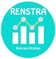

Pernahkan Anda Membayangkan....
- Mudahnya Melakukan Penyusunan Rencana Strategis (Renstra) tanpa Hambatan?
-
Menguasai berbagai tools seperti Logical Framework sebagai fondasi penyusunan Renstra, hingga SWOT Analysis untuk menetapkan strategi dan arah
kebijakan
Jika Iya, maka “Bimtek Penyusunan Rencana Strategis (Renstra) untuk K/L/PD” menjadi wadah yang tepat untuk Peningkatan Kompetensi Anda!